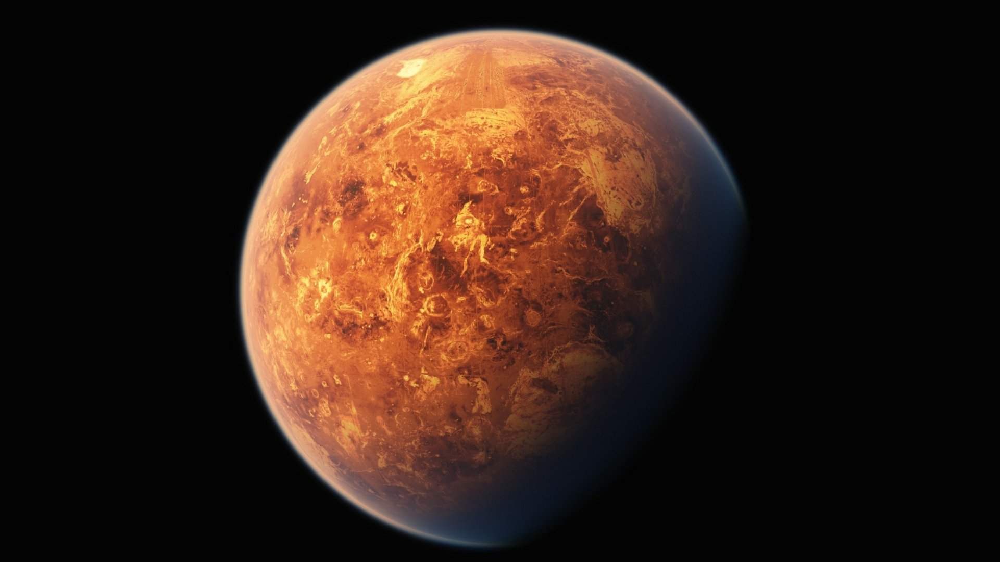
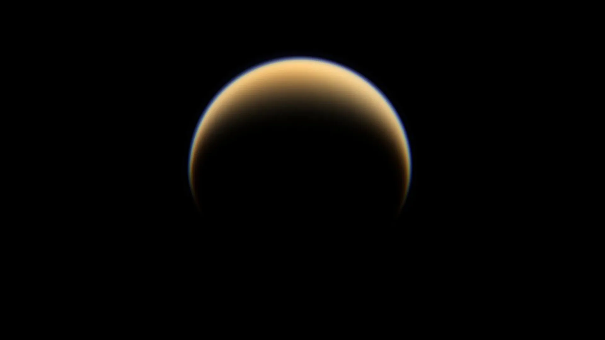
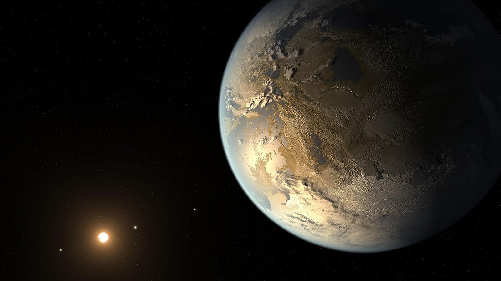

THE COSMIC
ARCHIVE
Dive into the deepest corners of the universe. From our neighboring planets to the most mysterious cosmic phenomena, your journey begins right here.
Prime Destinations
Charted territories currently under Exosphere observation and colonization.

Mars: The Red Frontier
Distance: 225M kmOur nearest planetary neighbor and the primary focus of Phase III colonization. Mars holds the key to humanity's multi-planetary future, with our first terraforming engines already deployed in the Jezero Crater.
VIEW ORBITAL DATA
Titan: Saturn's Giant
Distance: 1.4B kmSaturn’s largest moon features a thick atmosphere and lakes of liquid methane. It is the only other place in the solar system known to have an earth-like liquid cycle, making it a prime target for resource extraction.
VIEW ORBITAL DATA
Kepler-186f
Distance: 500 Light-yearsThe first Earth-size planet discovered in the habitable zone of another star. Exosphere's deep-space probe "Vanguard-1" is currently en route, utilizing experimental quantum-fold technology to reach it.
VIEW ORBITAL DATADeep Space Phenomena
Understanding the beautiful and violent forces that shape our universe.
Stellar Nurseries (Nebulae)
Nebulae are giant clouds of dust and gas in space. Some come from the gas and dust thrown out by the explosion of a dying star, such as a supernova. Other nebulae are regions where new stars are beginning to form. For this reason, some nebulae are called "star nurseries."
Exosphere utilizes specialized infrared telescopes to pierce through the thick dust clouds, studying the exact moments stars ignite.

Supermassive Black Holes
A black hole is a place in space where gravity pulls so much that even light can not get out. The gravity is so strong because matter has been squeezed into a tiny space. This can happen when a star is dying.
At the center of almost every large galaxy, including our Milky Way, lies a supermassive black hole. Exosphere's Event Horizon drones are currently mapping the gravitational waves emitted by these titans.